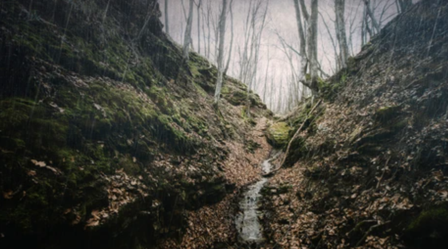

Decides que Mike debe investigar el fondo del barranco.
Mike se dirige al borde del barranco y comienza a bajar cuidadosamente. Se logra ver más y más lo que se encuentra en el fondo.
Debido a la oscuridad, Mike no logra ver un charco de lodo en la bajada, y resbala, cayendo al fondo del barranco.
Mike pierde la conciencia por un momento. Al despertar, se percata que se encuentra atrapado en el fondo del barranco,
sin saber cómo salir. Mike, asustado, intenta buscar cualquier forma de regresar a la cima, pero no hay manera de subir de nuevo.
Mike se encuentra atrapado en el fondo del barranco, sólo para descubrir que el origen de los ruidos no ha sido nada más que unos pavos reales que también se han perdido en el barranco.
Fin.